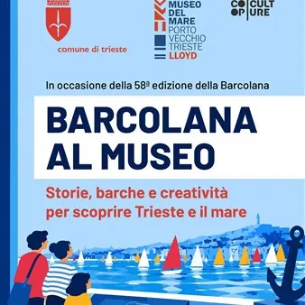

da sab 3 ott a sab 10 ott
Barcolana al museo - Museo del Mare
In occasione della 58ª edizione della Barcolana, il Comune di Trieste, insieme a CoopCulture, presenta un calendario di appuntamenti dedicati al Museo del Mare: tante occasioni per scoprire il Museo che più di ogni altro racconta il legame antico e indissolubile tra Trieste e il…
 Indicazioni
Indicazioni
- Costi e prenotazioni
- Costo non indicato · Prenotazione non indicata
- Programma
- Programma da verificare. Apri la fonte ufficiale per orari e possibili aggiornamenti.
- In caso di maltempo
- Nessuna indicazione specifica pubblicata.
- Note
- Acquisito automaticamente dalla fonte.
L’EVENTO
Descrizione completa
In occasione della 58ª edizione della Barcolana, il Comune di Trieste, insieme a CoopCulture, presenta un calendario di appuntamenti dedicati al Museo del Mare: tante occasioni per scoprire il Museo che più di ogni altro racconta il legame antico e indissolubile tra Trieste e il mare.
Visite guidate e attività creative accompagneranno pubblici diversi alla scoperta delle collezioni e delle storie del museo, con una particolare attenzione alle famiglie e ai più piccoli.
Crea tu. La Barcolana creativa
Attività: visita guidata e laboratorio creativo
Target: famiglie
Durata: 90 minuti
Costo: adulti 10€ | bambini (5-10 anni) 5€
Con “Crea tu. La Barcolana creativa”, bambini e famiglie sono invitati a dare spazio alla fantasia e a realizzare la propria piccola imbarcazione, utilizzando i materiali messi a disposizione durante il laboratorio.
E, come nella vera Barcolana, anche queste piccole creazioni avranno la loro occasione di mettersi in mostra: al termine del laboratorio potranno infatti essere esposte al Museo del Mare e diventare parte di una speciale mostra creativa per tutto il mese di ottobre.
Crea tu. La Barcolana creativa per le scuole
Target: scuole
Costo: 120€ gruppo classe
Il progetto continua anche per le scuole!
Per tutto il mese di ottobre, le classi potranno prenotare una visita al Museo del Mare e partecipare a “Crea tu. La Barcolana creativa”, realizzando le proprie piccole imbarcazioni da esporre successivamente al museo insieme alle altre creazioni.
Un modo per trasformare la visita in un’esperienza creativa e partecipata, portando la propria classe dentro la speciale mostra dedicata alla Barcolana.
Trieste e il mare
Attività: visita guidata
Target: adulti
Durata: 60 minuti
Costo: 7€
Un percorso alla scoperta del Museo del Mare e del rapporto profondo che lega Trieste alla sua storia marittima. La visita guidata accompagna i partecipanti attraverso le collezioni del museo, raccontando storie, persone, imbarcazioni e tradizioni che testimoniano il ruolo centrale del mare nella nascita e nello sviluppo della città.
Un'occasione per conoscere il patrimonio del Museo del Mare e approfondire il rapporto antico e ancora oggi vitale tra Trieste, il suo porto e il mare.
CALENDARIO DEGLI APPUNTAMENTI
Sabato 3 ottobre 11.00 – 12.30 | Crea tu. La Barcolana creativa 15.00 – 16.00 | Trieste e il mare 16.00 – 17.30 | Crea tu. La Barcolana creativa Domenica 4 ottobre 10.00 – 11.00 | Trieste e il mare 11.00 – 12.30 | Crea tu. La Barcolana creativa 15.00 – 16.00 | Trieste e il mare Sabato 10 ottobre 10.00 – 11.00 | Trieste e il mare 16.00 – 17.00 | Trieste e il mare
PRENOTAZIONI
Tutte le attività sono su prenotazione. Sarà possibile prenotare online, tramite il sito CoopCulture: Crea tu. La Barcolana creativa | CoopCulture e
Trieste e il mare | CoopCulture o telefonicamente, tramite il Call Center CoopCulture al numero 040 9892032, dal lunedì al venerdì, dalle 9.00 alle 18.00, sabato, dalle 9.00 alle 13.00
IL PROGRAMMA
Programma e orari
Appuntamenti raccolti dalle fonti elencate. Dove manca un orario, non è ancora disponibile in questa scheda.
Programma pubblicato
- 11.00 – 12.30 |
- 15.00 – 16.00 |
- 16.00 – 17.30 |
- 10.00 – 11.00 |
- 16.00 – 17.00 |
INFORMAZIONI UTILI
Prima di partire
- Controllare la fonte prima di partire.
ORGANIZZAZIONE